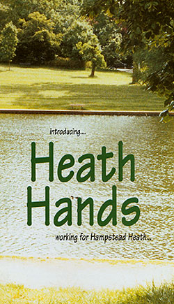
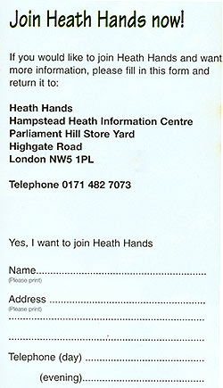

'Heath Hands is a new volunteer organisation created to help the Corporation of London make Hampstead Heath even greener and to give everyone who enjoys the Heath an opportunity to make a difference.'